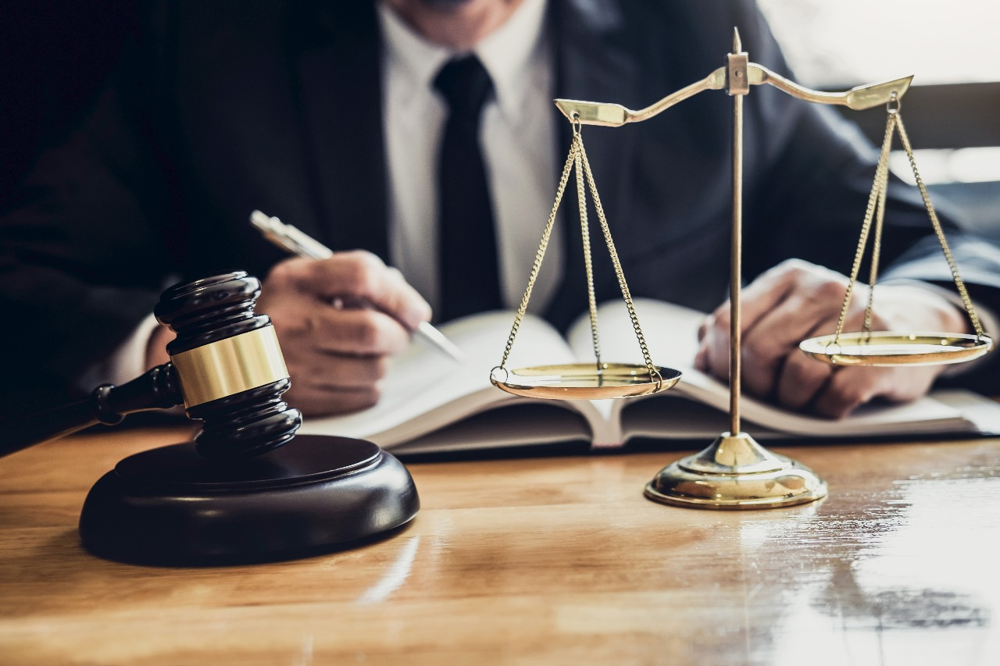

JUDGE
WHAT IS JUDGE
A judge is a person who presides over court proceedings, either alone or as a part of a panel of judges. A judge hears all the witnesses and any other evidence presented by the barristers or solicitors of the case, assesses the credibility and arguments of the parties, and then issues a ruling in the case based on their interpretation of the law and their own personal judgment. A judge is expected to conduct the trial impartially and, typically, in an open court.
QUALIFICATION:
Candidates from any stream, be it arts, science, commerce or humanities in class 12th are eligible to initiate their legal careers. Candidates willing to become a judge after 12th need to enroll themselves for 5 years integrated law courses like B.A.LL.B. , B.Com.LL.B. , B.B.A.LL.B etc. although it is advisable to opt for BALLB if you wish to pursue your career in judiciary as pre law subjects in BALLB like History, sociology, English helps the candidate in further preparation for judiciary. However it is not mandatory to complete 5 year course only, graduate students can also enroll themselves for 3 years LLB. Upon completion of respective 5 year and 3 year LLB courses the candidate is eligible to appear for the Judicial Services Examination or Provincial Civil Service- Judicial Examination. Candidates who have a valid law degree from a recognized university or are an Advocate enrolled under the Advocate Act 1961 are eligible to apply.
Judicial Service Examination: QUALIFICATION:
If a candidate wishes to become a judge in the Indian Judicial Services he is required to take the Judicial Service Examination or PCS(J) Provincial Civil Service- Judicial Examination. Candidates who have just completed Law degree are eligible to become the judge of subordinate courts only after appearing for this exam. Once the Candidate clears this exam there are further two types of examinations- Lower Judicial Services (LJS) and Higher Judicial Services (HJS).
Lower Judicial Services (LJS) QUALIFICATION:
Exam Format:
• Preliminary Exam – MCQ based exam – Candidates are required to score minimum 60
% marks to qualify this exam.
• Main Exam – Descriptive type exam – Candidates are required to write detailed answers and score minimum 40% in each exam and 50% in to qualify for the Interview.
• Interview – This round includes face to face interaction with the selection panel. Candidates passing the main examinations thereby appear for the interview round for final selection.
HIGHER JUDICIAL SERVICES:
To be eligible to become a district judge candidates have to appear for the Higher Judicial Services. Civil Judges, Advocates willing to become District judge after enrolling with Bar Council of India,
Exam Format:
• Preliminary Exam – MCQ based exam – Candidates are required to score minimum 60
% marks to qualify this exam.
• Main Exam – Descriptive type exam – Candidates are required to write detailed answers and score minimum 40% in each exam and 50% in to qualify for the Interview.
• Interview – This round includes face to face interaction with the selection panel. Candidates passing the main examinations thereby appear for the interview round for final selection.
Eligibility-
Any law graduate having enrolled with Bar Counsel of India and having experience of more than 7 years as an advocate is eligible to appear for the Higher Judicial Services.
HIGH COURT JUDGE
Eligibility-
• The candidate must be a resident of India
• Should be enrolled with Bar Counsel Of India
• Should have an experience of at least 10 years of advocacy in High court or High court in succession.
• Alternatively if he has held a judicial office for more than 10 years
The judges of the High Court are appointed by the President of India in consultation with the Chief Justice. If the High court covers the jurisdiction of two or more states then along with the president and Chief justice, the governors of the respective states are also consulted before appointment of such High Court Judges.
Salary of High Court Judge- A high court judge earns up to Rs. 2, 25,000/- per month plus hospitality allowances up to Rs. 27,000/-. However this might differ from state to state.
SUPREME COURT JUDGE
Eligibility-
• The candidate must be a citizen of India.
• The candidate has been a judge of the high court or high court in succession for at least 5 years or
• The candidate has been an advocate in the High court or High court in succession for at least 10 years or
• If the president of India observes the candidate as a distinguished jurist, he holds the right to appoint that candidate as the Supreme Court Judge.
Salary of Supreme Court Judge- a Supreme Court judge earns upto Rs. 2, 50,000/- per month plus hospitality allowances upto Rs. 34,000/-.
CHIEF JUSTICE OF INDIA
The final and most prestigious judge is the Chief Justice of India. The president of India appoints the Chief Justice of India.